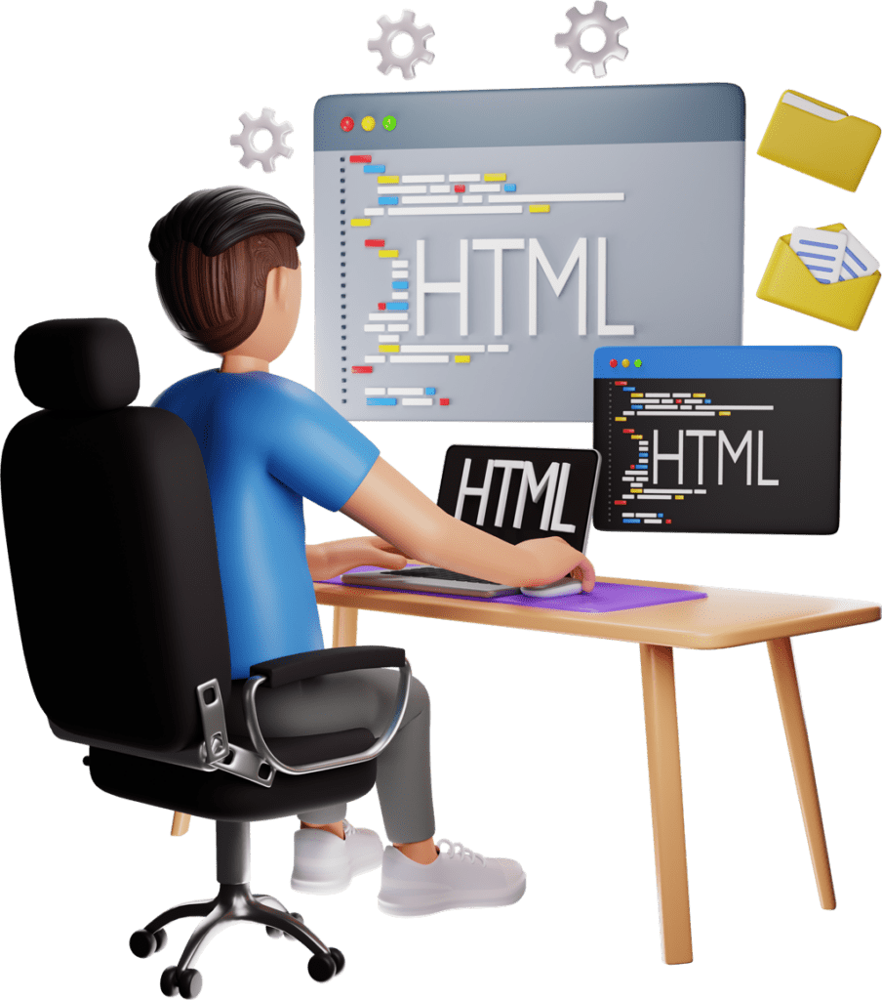
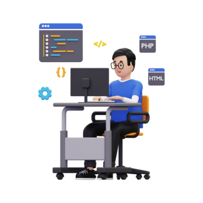
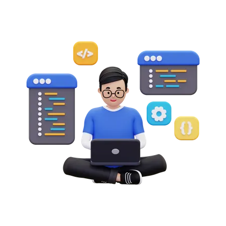

Ташкент, Узбекистан (UzDaily.uz) — 12 сентября 2024 года в инновационном предпринимательском центре U-Enter, созданном при поддержке Торгово-промышленной палаты Узбекистана и KOICA, состоялось торжественное открытие проекта K-Lab Uzbekistan. Проект K-Lab Uzbekistan нацелен на внедрение и использование технологий 3D и IT-инфраструктуры, а также на стимулирование развития инновационного бизнеса через обучение в этих областях. Общая стоимость проекта составляет $1,6 млн и осуществляется при поддержке Национального агентства по развитию информационных технологий Республики Корея (NIPA). В рамках мероприятия также были вручены гранты молодым стартаперам для поддержки их инновационных проектов



